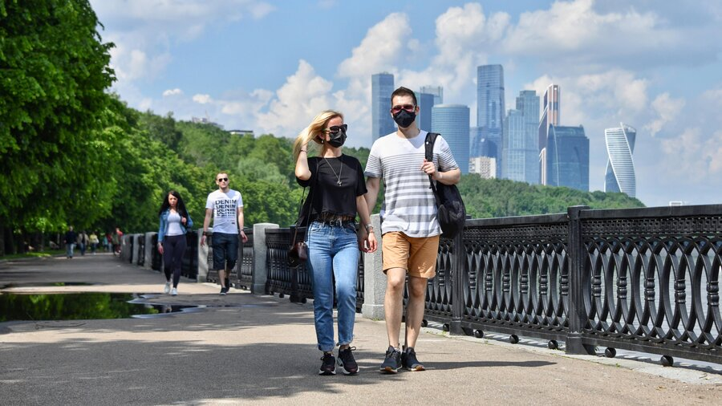

'Ничего эффективнее на данный момент нет': эксперты – о важности ношения масок в столице
За несоблюдение масочного режима на 300 миллионов рублей оштрафовали столичные магазины.Несмотря на спад пандемии, носить маски и перчатки необходимо в магазинах, общественном транспорте и местах скопления людей.Рассказываем, почему средствами защиты не стоит пренебрегать и с какими заболеваниями они борются, кроме коронавируса.

'Пандемия пошла на спад, но проблема еще не снята, поэтому во всех местах массового скопления людей этот режим сохраняется', – сообщил Москве 24 депутат Госдумы, врач-эпидемиолог Геннадий Онищенко.По его мнению, коронавирус уже 'стал рядовым явлением в нашей жизни', но многие забыли о других заболеваниях, которые активизируются с приходом осени.
На фоне роста простудных заболеваний активизируется не только коронавирус, но и парагрипп, энтеровирусы, всего порядка двухсот возбудителей респираторных заболеваний.Там везде нужны маски.
По словам Онищенко, масочный режим – это не новая реальность, а эстафета, которую постепенно передает коронавирус, с которым мы получили первичные навыки ношения масок.'До этого в Москве, увидев человека в маске, нужно было сразу объявлять красный день календаря для москвичей.Теперь это становится реальностью, что хорошо.Это должно быть элементом нашей культуры здорового образа жизни', – подчеркнул Онищенко.
Также, по мнению эксперта, соблюдение масочного режима позволит сэкономить деньги на лекарствах и продлить годы жизни москвичей.'Ничего эффективнее масок у нас на данный момент нет', – отметил Онищенко.
Несмотря на обязательное ношение масок и перчаток в транспорте, магазинах и массовых местах скопления людей, многие москвичи игнорируют средства защиты.Одним в маске жарко, другим тяжело дышать, а третьи просто не верят в их эффективность.
Между тем москвичка Наталья Вишкова в текущей эпидемиологической ситуации считает важным обезопасить себя средствами защиты в метро и общественных местах.
В местах, где очень много людей, маски имеют смысл, потому что многие болеют, ходят с насморком, ОРВИ и маска все равно тебя защищает.Если кто-то лишний раз чихнет, то бактерии не попадут.
Для жительницы столицы Дарьи Маркеловой в условиях пандемии сложнее всего оказалось контролировать соприкосновение рук с лицом.При этом она всегда надевает маску и перчатки в общественных местах.
Постоянно переживаешь, что выходишь из своей квартиры и автоматически думаешь о том, что нельзя дотронуться до лица, нужно это контролировать, носить с собой средства защиты.
Покидая квартиру, Дарья всегда надевает перчатки, чтобы не касаться кнопок лифта и ручек дверей.При выходе из подъезда она выкидывает перчатки в мусорный контейнер и дезинфицирует руки антибактериальными салфетками или гелем.
Фото: портал мэра и правительства Москвы/Юлия Иванко
В текущей ситуации непонятно, как долго продолжится масочно-перчаточный режим, но ясно одно: соблюдение мер безопасности позволит сохранить здоровье и сократить вероятность новых вспышек заболевания.Вирусолог, профессор НИЦ эпидемиологии и микробиологии имени Н. Ф. Гамалеи Анатолий Альтштейн считает, что длительность ношения масок будет зависеть от развития эпидемиологической ситуации.
В обстановке пандемии это необходимо и, может быть, будет необходимо в течение всего следующего года, а может, и двух лет.Будет зависеть от того, как это будет развиваться.
Эксперт отметил, что если более 50% людей будет соблюдать масочно-перчаточный режим, это окажет влияние на ход эпидемии.Если таких людей будет 90%, то влияние будет гораздо сильнее и мы быстрее преодолеем этот период.При этом необязательно носить маску целый день, важно надевать ее, когда необходимо.
Действительно, маска утомляет и в ней тяжело дышать, поэтому использовать ее нужно локально, в местах скопления людей.Спускаетесь в метро – надели маску.После этого вы выходите и снимаете ее.Когда вы просто на свежем воздухе и не приближаетесь к людям, ношение маски необязательно.
Также вирусолог порекомендовал постоянно носить с собой флакончик с дезинфицирующим веществом, которым можно протереть руки, если вдруг вы потрогали предметы в транспорте или магазине без перчаток.
Москвичам напомнили об обязательном ношении средств защиты в общественных местах
Posted On: 2020-08-02T21:00:00
Content Date: 2020-08-02
Download Date: 2021-04-21
Document ID: L0C04ANV0